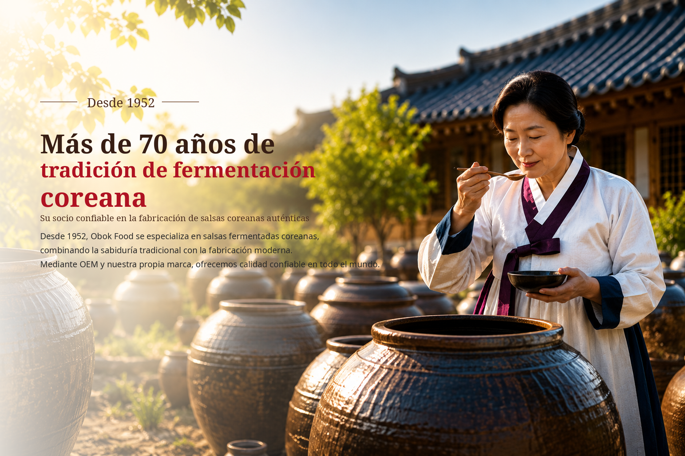

01
Salsa de soja fermentada
Aroma equilibrado y sabor umami para restauración, venta minorista y desarrollo OEM.
SALSA DE SOJA COREANA
 BUSAN · COREA
BUSAN · COREASOBRE OBOK
Con más de siete décadas de experiencia en la elaboración de salsas, OBOK combina el conocimiento tradicional de la fermentación con tecnología alimentaria moderna. Desarrollamos y fabricamos salsa de soja, gochujang, doenjang y una amplia variedad de salsas para socios internacionales.
CENTRO DE PRODUCTOS
Desde salsas coreanas fermentadas tradicionales hasta productos personalizados para mercados globales, OBOK ofrece soluciones flexibles de desarrollo y fabricación.
Aroma equilibrado y sabor umami para restauración, venta minorista y desarrollo OEM.
SALSA DE SOJA COREANA
Equilibrio de dulzor, picante y umami para arroz, barbacoa y aplicaciones de salsa.
GOCHUJANG
Profundo sabor de soja fermentada para sopas, guisos y productos de condimento.
DOENJANG
Ideal para fideos coreanos con salsa de frijol negro y diversas recetas de restauración.
CHUNJANG
Dulce, sabroso y ligeramente picante; ideal para barbacoa, wraps de lechuga y salsas para mojar.
SSAMJANG
CAPACIDAD DE FABRICACIÓN
Instalaciones dedicadas de fermentación y almacenamiento, procesos estandarizados y un equipo experimentado respaldan una calidad constante y entregas confiables.
RESTAURACIÓN Y FORMATOS GRANDES
Suministramos formatos profesionales y a granel para restauración, uso industrial y distribución internacional. El envase y las especificaciones pueden adaptarse a cada mercado.

SUMINISTRO A GRANEL
Suministramos formatos profesionales y a granel para restauración, uso industrial y distribución internacional. El envase y las especificaciones pueden adaptarse a cada mercado.
 Cubo de gochujang de 14 kg
Cubo de gochujang de 14 kg Cubo de doenjang de 14 kg
Cubo de doenjang de 14 kg Doenjang tradicional de 14 kgOEM / MARCA PRIVADA
Doenjang tradicional de 14 kgOEM / MARCA PRIVADACOLECCIÓN PREMIUM DE REGALOS
Sets premium de salsa de soja para campañas estacionales, regalos corporativos y programas de venta internacional. La composición y el envase pueden personalizarse.


OEM Y MARCA PRIVADA
Apoyamos la planificación del producto, el desarrollo de muestras, la cotización, la producción y la entrega internacional según el mercado objetivo, el sabor y las necesidades de envase.
Producto, mercado, tamaño y precio objetivo.
Ajuste de sabor y receta.
MOQ, envase, plazo y condiciones.
Fabricación y control de calidad.
Documentos, envío y seguimiento.
CALIDAD Y FÁBRICA
La gestión sistemática de la higiene y el control de procesos críticos ayudan a mantener una calidad constante desde la recepción de materias primas hasta el envío del producto terminado.
 PRODUCTOS CON CERTIFICACIÓN HACCP
PRODUCTOS CON CERTIFICACIÓN HACCPNUESTRA FILOSOFÍA DE FERMENTACIÓN
Aunque los tiempos han cambiado, nuestro compromiso permanece.
Seguimos respetando los principios tradicionales de fermentación de Corea
con paciencia, cuidado y respeto por la naturaleza.
PELÍCULA DE MARCA O’BOK FOODS
Descubra los valores, estándares de producción y la dedicación artesanal detrás de O’BOK Foods.
CONTÁCTENOS
Envíenos el tipo de producto, tamaño objetivo, cantidad y mercado de destino.